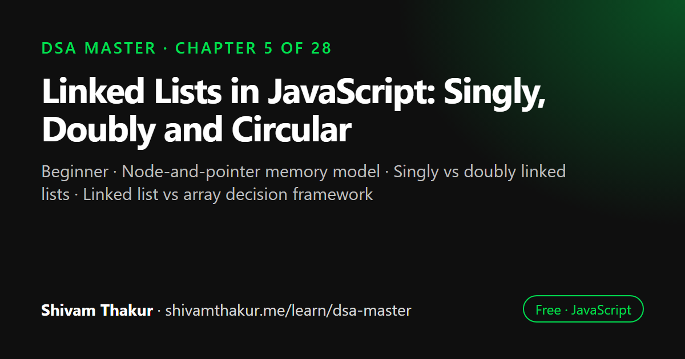

Chapter 5 of 28 · Beginner
Linked Lists in JavaScript: Singly, Doubly and Circular
Linked Lists — Breaking Free From Contiguous Memory

A linked list is a sequence of nodes where each node stores a value and a pointer to the next node, so elements do not need to sit next to each other in memory. This chapter builds singly and doubly linked lists in JavaScript, compares them with arrays, and works through the classic problems: reversal, merging, middle node, cycle detection and removal.
In this chapter you will learn
- Node-and-pointer memory model
- Singly vs doubly linked lists
- Linked list vs array decision framework
- Reversing and merging lists
- Dummy node and fast/slow pointer techniques
5.0 Why Linked Lists Come Right After Hashing
We've now spent three chapters (3, 4, and implicitly 2) building deep respect for arrays and hash tables. This chapter introduces the first data structure whose entire reason for existing is to solve problems arrays are fundamentally bad at: cheap insertion and deletion anywhere in the sequence. Recall from Chapter 3's complexity table: unshift, shift, and middle splice are all O(n) on arrays, because contiguous memory means shifting neighbors is unavoidable. Linked lists exist specifically to make insertion and deletion O(1) — at the cost of losing O(1) random access. This chapter is about understanding that trade-off in your bones, not just memorizing "linked lists are good at X."
5.1 What Is a Linked List? (Memory Representation)
Definition: A linked list is a linear data structure where each element (called a node) stores its own data plus a reference (pointer) to the next node in the sequence. Unlike arrays, nodes are not required to sit in contiguous memory.
Real-Life Analogy: A Scavenger Hunt
Think of a scavenger hunt where each clue tells you where to find the next clue, but the clues themselves are scattered anywhere in the house — under the couch, in the fridge, on the roof. There's no requirement that clue #2 be physically next to clue #1. The only thing connecting them is that clue #1 tells you exactly where to go to find clue #2.
This is exactly a linked list: each node "tells you where to go" (via a next pointer) to find the subsequent node, regardless of where either actually lives in memory.
ASCII Visualization: Array vs. Linked List Memory Layout
ARRAY (contiguous memory):
Address: 1000 1004 1008 1012
+-----+-----+-----+-----+
| 10 | 20 | 30 | 40 |
+-----+-----+-----+-----+
Access arr[2]: address = 1000 + (2*4) = 1008 -> O(1) direct calculation
LINKED LIST (scattered memory, connected by pointers):
Address 2048 Address 1024 Address 3072 Address 512
+-----+-------+ +-----+-------+ +-----+-------+ +-----+------+
| 10 | ●-----+---> | 20 | ●-----+-----> | 30 | ●-----+-----> | 40 | NULL |
+-----+-------+ +-----+-------+ +-----+-------+ +-----+------+
HEAD
Access the 3rd node: must start at HEAD and follow pointers one at a time.
No way to "jump" directly to it. O(n) in the worst case.This single diagram is the entire trade-off of this chapter, distilled: arrays give you O(1) random access at the cost of O(n) insertion/deletion in the middle; linked lists give you O(1) insertion/deletion (once you're at the right spot) at the cost of O(n) random access.
5.2 Building a Singly Linked List From Scratch
5.2.1 The Node
Every linked list is built from a simple, recursively-shaped unit: the node. (Notice: "a node contains data and a reference to another node of the same kind" — this is exactly the recursive data shape we previewed with the file-system example in Chapter 2!)
class ListNode {
constructor(value, next = null) {
this.value = value;
this.next = next;
}
}5.2.2 The Full Singly Linked List Class
class SinglyLinkedList {
#head = null;
#tail = null;
#size = 0;
get size() {
return this.#size;
}
get isEmpty() {
return this.#size === 0;
}
// Add to the END of the list
append(value) {
const newNode = new ListNode(value);
if (this.#head === null) {
this.#head = newNode;
this.#tail = newNode;
} else {
this.#tail.next = newNode;
this.#tail = newNode;
}
this.#size++;
return this;
}
// Time: O(1) — because we maintain a #tail pointer! (Without it, this would be O(n).)
// Add to the BEGINNING of the list
prepend(value) {
const newNode = new ListNode(value, this.#head);
this.#head = newNode;
if (this.#tail === null) {
this.#tail = newNode; // list was empty; new node is both head and tail
}
this.#size++;
return this;
}
// Time: O(1) — no shifting required, unlike Array.unshift()!
// Insert at a specific index
insertAt(index, value) {
if (index < 0 || index > this.#size) {
throw new RangeError('Index out of bounds');
}
if (index === 0) return this.prepend(value);
if (index === this.#size) return this.append(value);
const newNode = new ListNode(value);
let current = this.#head;
for (let i = 0; i < index - 1; i++) {
current = current.next; // walk to the node BEFORE the insertion point
}
newNode.next = current.next;
current.next = newNode;
this.#size++;
return this;
}
// Time: O(n) — must walk to the position first. The insertion ITSELF is O(1);
// the walk to find the position is what costs O(n).
removeAt(index) {
if (index < 0 || index >= this.#size) {
throw new RangeError('Index out of bounds');
}
if (index === 0) {
const removedValue = this.#head.value;
this.#head = this.#head.next;
if (this.#head === null) this.#tail = null; // list became empty
this.#size--;
return removedValue;
}
let current = this.#head;
for (let i = 0; i < index - 1; i++) {
current = current.next; // walk to the node BEFORE the one to remove
}
const removedNode = current.next;
current.next = removedNode.next; // "skip over" the removed node
if (removedNode === this.#tail) {
this.#tail = current;
}
this.#size--;
return removedNode.value;
}
// Time: O(n) for the same reason as insertAt — the walk dominates.
get(index) {
if (index < 0 || index >= this.#size) {
throw new RangeError('Index out of bounds');
}
let current = this.#head;
for (let i = 0; i < index; i++) {
current = current.next;
}
return current.value;
}
// Time: O(n) — this is the fundamental trade-off versus arrays' O(1) access!
toArray() {
const result = [];
let current = this.#head;
while (current !== null) {
result.push(current.value);
current = current.next;
}
return result;
}
// Time: O(n)
*[Symbol.iterator]() {
let current = this.#head;
while (current !== null) {
yield current.value;
current = current.next;
}
}
}
const list = new SinglyLinkedList();
list.append(10).append(20).append(30);
list.prepend(5);
console.log(list.toArray()); // [5, 10, 20, 30]
console.log([...list]); // [5, 10, 20, 30] — works because of the generator-based iterator!5.3 Singly vs. Doubly Linked Lists
5.3.1 The Problem With Singly Linked Lists: You Can Only Go Forward
In our SinglyLinkedList above, each node only knows its next neighbor. This means: given a reference to some node in the middle of the list, you cannot cheaply find the node that comes before it — you'd have to restart from #head and walk forward again, an O(n) operation, even though you're "standing right next to" the node you actually need.
5.3.2 Doubly Linked Lists: Adding a prev Pointer
class DoublyListNode {
constructor(value, prev = null, next = null) {
this.value = value;
this.prev = prev;
this.next = next;
}
}
class DoublyLinkedList {
#head = null;
#tail = null;
#size = 0;
get size() {
return this.#size;
}
append(value) {
const newNode = new DoublyListNode(value, this.#tail, null);
if (this.#tail === null) {
this.#head = newNode;
} else {
this.#tail.next = newNode;
}
this.#tail = newNode;
this.#size++;
return this;
}
// Time: O(1)
prepend(value) {
const newNode = new DoublyListNode(value, null, this.#head);
if (this.#head === null) {
this.#tail = newNode;
} else {
this.#head.prev = newNode;
}
this.#head = newNode;
this.#size++;
return this;
}
// Time: O(1)
// The killer feature: removing a node in O(1) IF you already have a reference to it
removeNode(node) {
if (node.prev !== null) {
node.prev.next = node.next;
} else {
this.#head = node.next; // node was the head
}
if (node.next !== null) {
node.next.prev = node.prev;
} else {
this.#tail = node.prev; // node was the tail
}
this.#size--;
}
// Time: O(1) — no walking required, because we can reach BOTH neighbors directly!
}ASCII Visualization: Doubly Linked List Structure
HEAD TAIL
v v
NULL <-- [10] <--> [20] <--> [30] <--> [40] --> NULL
prev/next prev/next prev/next prev/next
Each node has TWO pointers: 'prev' (backward) and 'next' (forward).
You can traverse in EITHER direction, and given any single node,
you can reach both its neighbors in O(1) without walking from HEAD.5.4 Linked List vs. Array: The Decision Framework
5.5 Classic Linked List Problems, Fully Worked
5.5.1 Reversing a Singly Linked List
This is, without exaggeration, one of the most frequently asked interview questions across every major tech company. It must be automatic muscle memory by the time you finish this section.
Naive approach — convert to array, reverse, rebuild:
function reverseViaArray(head) {
const values = [];
let current = head;
while (current !== null) {
values.push(current.value);
current = current.next;
}
values.reverse();
current = head;
for (const value of values) {
current.value = value;
current = current.next;
}
return head;
}
// Time: O(n) Space: O(n) — the extra array is unnecessary overheadBest — iterative, in-place pointer manipulation, O(1) space:
function reverseLinkedList(head) {
let prev = null;
let current = head;
while (current !== null) {
const nextTemp = current.next; // save the next node BEFORE we overwrite the pointer
current.next = prev; // reverse this node's pointer
prev = current; // advance prev
current = nextTemp; // advance current (using the saved reference)
}
return prev; // prev is now the new head
}Dry Run: Reversing 1 -> 2 -> 3 -> NULL
Initial: prev=NULL, current=[1]->[2]->[3]->NULL
Iteration 1:
nextTemp = current.next = [2]
current.next = prev -> [1].next = NULL (1 now points to NULL)
prev = current -> prev = [1]
current = nextTemp -> current = [2]
State: NULL <- [1] [2]->[3]->NULL
^prev ^current
Iteration 2:
nextTemp = current.next = [3]
current.next = prev -> [2].next = [1] (2 now points back to 1)
prev = current -> prev = [2]
current = nextTemp -> current = [3]
State: NULL <- [1] <- [2] [3]->NULL
^prev ^current
Iteration 3:
nextTemp = current.next = NULL
current.next = prev -> [3].next = [2] (3 now points back to 2)
prev = current -> prev = [3]
current = nextTemp -> current = NULL
State: NULL <- [1] <- [2] <- [3] current=NULL, loop ends
^prev
Return prev = [3]. New list: [3] -> [2] -> [1] -> NULL ✓- Time: O(n) — one pass.
- Space: O(1) — only three pointer variables, no matter how long the list is. This is strictly better than the array-based approach.
5.5.2 Recursive Reversal (Connecting Back to Chapter 2)
function reverseLinkedListRecursive(head) {
// BASE CASE: empty list or a single node is already "reversed"
if (head === null || head.next === null) {
return head;
}
const newHead = reverseLinkedListRecursive(head.next); // "leap of faith": trust this reverses everything AFTER head
head.next.next = head; // make the node AFTER head point back to head
head.next = null; // head is now the new TAIL, so it must point to null
return newHead;
}- Time: O(n)
- Space: O(n) — remember Chapter 2's crucial lesson: recursion depth counts as space! This recursive version is elegant but strictly worse in space complexity than the iterative version. Always mention this trade-off explicitly if you offer the recursive solution in an interview.
5.5.3 Detecting a Cycle (Full Preview of the Next Chapter)
The problem: does this linked list loop back on itself somewhere, instead of properly ending in null?
1 -> 2 -> 3 -> 4
^ |
|_________|
(4 points back to 3 — a cycle!)Naive approach — track every visited node in a Set (closing the loop back to Chapter 4!):
function hasCycleNaive(head) {
const visited = new Set();
let current = head;
while (current !== null) {
if (visited.has(current)) {
return true; // we've seen this exact node before -> cycle!
}
visited.add(current);
current = current.next;
}
return false;
}
// Time: O(n) Space: O(n) — the visited Set grows with the listBest — Floyd's Cycle Detection ("tortoise and hare"), O(1) space:
function hasCycle(head) {
let slow = head;
let fast = head;
while (fast !== null && fast.next !== null) {
slow = slow.next; // moves 1 step
fast = fast.next.next; // moves 2 steps
if (slow === fast) {
return true; // they met -> there's a cycle
}
}
return false; // fast reached the end -> no cycle
}Dry Run
List: 1 -> 2 -> 3 -> 4 -> (back to 3, cycle)
slow=1, fast=1
Step 1: slow=2, fast=3
Step 2: slow=3, fast=4->3->... wait, fast moves 2 steps: 3->4, 4->3 => fast=3
slow=3, fast=3 -> EQUAL! Cycle detected.- Both approaches are O(n) time.
- Space: Set-based is O(n); Floyd's is O(1) — a genuinely important distinction, and this exact algorithm gets a full dedicated treatment (including finding where the cycle starts, not just detecting one) in the very next chapter, the Fast & Slow Pointer Masterclass.
5.5.4 Finding the Middle of a Linked List (Same Technique, Different Goal)
function findMiddle(head) {
let slow = head;
let fast = head;
while (fast !== null && fast.next !== null) {
slow = slow.next;
fast = fast.next.next;
}
return slow; // when fast reaches the end, slow is at the middle
}5.5.5 Merging Two Sorted Linked Lists
A direct linked-list analogue of the merge step from Merge Sort (which gets its own full treatment in the Sorting chapter).
function mergeTwoSortedLists(list1, list2) {
const dummy = new ListNode(null); // a "dummy" placeholder simplifies edge-case handling
let current = dummy;
while (list1 !== null && list2 !== null) {
if (list1.value <= list2.value) {
current.next = list1;
list1 = list1.next;
} else {
current.next = list2;
list2 = list2.next;
}
current = current.next;
}
current.next = list1 !== null ? list1 : list2; // attach whichever list has leftovers
return dummy.next; // skip the dummy node itself
}5.6 Circular Linked Lists (A Brief but Important Variant)
Definition: A circular linked list is a variant where the last node's next pointer points back to the first node (or some earlier node) instead of null, forming a loop by design (not by bug!).
Real-World Use Case
Round-robin scheduling (e.g., a CPU scheduler cycling through processes, or a simple multiplayer game cycling through players' turns) is a natural fit: after processing the last item, you want to seamlessly continue from the first item again, without special-casing "wrap back around."
class CircularLinkedList {
#head = null;
#tail = null;
#size = 0;
append(value) {
const newNode = new ListNode(value);
if (this.#head === null) {
this.#head = newNode;
this.#tail = newNode;
newNode.next = newNode; // points to itself — a circle of one!
} else {
newNode.next = this.#head;
this.#tail.next = newNode;
this.#tail = newNode;
}
this.#size++;
return this;
}
// Print n values starting from head, wrapping around as needed
traverseN(n) {
const result = [];
let current = this.#head;
for (let i = 0; i < n && current !== null; i++) {
result.push(current.value);
current = current.next;
}
return result;
}
}
const clock = new CircularLinkedList();
clock.append('12').append('3').append('6').append('9');
console.log(clock.traverseN(10));
// ['12','3','6','9','12','3','6','9','12','3'] — wraps around naturally!5.7 Edge Cases and Gotchas Checklist for Linked List Problems
- Empty list (
head === null). Does your function handle this without throwing? - Single-node list. Especially important for reversal, cycle detection, and middle-finding — verify
fast.nextchecks don't crash whenfastis alreadynull. - Two-node list. A classic boundary case for "remove the Nth node from the end" style problems.
- The node to modify is the head itself. Many operations (delete, reverse partial ranges) require special handling when the target is the very first node — this is exactly why the dummy-node trick (section 5.5.5) exists.
- The node to modify is the tail. Symmetric to the above — remember to update your
#tailreference if you maintain one. - Losing the reference to the rest of the list (the reversal bug from section 5.5.1) — always save
nextbefore mutatingcurrent.next. - For circular lists specifically: never use a naive
while (current !== null)loop.
5.8 Chapter Summary
This chapter introduced the first data structure in the book that deliberately gives up array's O(1) random access in exchange for O(1) insertion and deletion — a genuine trade-off, not a strict upgrade, and the entire chapter has been about internalizing exactly when that trade makes sense. We built a singly linked list from scratch, learning that maintaining an explicit #tail pointer is what makes append truly O(1) rather than accidentally O(n), and that insertion/deletion "in the middle" is O(1) for the mutation itself but O(n) overall because finding the position requires walking from the head — a distinction worth stating precisely in interviews.
We extended to doubly linked lists, whose extra prev pointer is the key that unlocks true O(1) deletion given only a direct node reference (not an index), which is exactly the signal to listen for in problems that hand you a node reference directly rather than a position to search for. We built an honest decision framework for choosing arrays versus linked lists based on actual access patterns, and — critically — introduced cache locality as a real-world, hardware-level performance factor that Big-O notation deliberately ignores, explaining why arrays often win in practice even when Big-O analysis alone might suggest a tie.
We worked through the canonical linked list interview problems in full depth: reversal (iterative O(1) space via the "save, reverse, advance, advance" rhythm, and recursive O(n) space, with the space trade-off explicitly named), cycle detection via Floyd's tortoise-and-hare algorithm (O(1) space, versus a Set-based O(n) space alternative — directly reusing Chapter 4's hashing toolkit), finding the middle using the same fast/slow pointer mechanism for a different goal, and merging two sorted lists using the extremely reusable dummy node technique, which eliminates special-case handling for "is this the first node of the result?" This entire cluster of fast/slow pointer techniques is deliberately left as a teaser here — the very next chapter is a full masterclass dedicated entirely to formalizing and extending this one idea across many more problems.
5.9 Revision Notes
- Linked lists trade O(1) random access (arrays) for O(1) insertion/deletion (given a position/reference) — never a strict upgrade, always a trade-off based on actual access patterns.
- Maintain a
#tailpointer to makeappendO(1); without it, append silently degrades to O(n). - Doubly linked lists add a
prevpointer, enabling true O(1) deletion given a direct node reference — the signal for this is a problem handing you a node, not an index. - Cache locality (hardware-level, ignored by Big-O) is a real reason arrays often outperform linked lists in practice even at matching asymptotic complexity.
- Linked list reversal: iterative is O(1) space via "save, reverse, advance, advance"; recursive is O(n) space due to call stack — always name this trade-off.
- Floyd's cycle detection (tortoise and hare) achieves O(1) space cycle detection, versus O(n) space for a Set-based visited-tracking approach.
- The dummy node technique eliminates special-casing "the first node of the result" in list-construction problems (merging, filtering, etc.).
- Never use a naive
while (current !== null)loop on a circular linked list — it will never terminate.
5.10 Mind Map (ASCII)
LINKED LISTS
|
+-------------------+------+------+----------------------+
| | | |
MEMORY MODEL SINGLY vs. ARRAY vs. LIST CLASSIC PROBLEMS
| DOUBLY DECISION FRAMEWORK |
Scattered nodes | | +---------+---------+---------+
O(1) insert/delete 1 pointer Random access? Reversal Cycle Middle Merge
O(n) random access vs 2 ptrs -> Array (iter/ Detection Finding (dummy
| | Insert/delete? recursive) (Floyd's (fast/ node
#tail pointer prev enables -> Linked List O(1) vs tortoise/ slow) trick)
-> O(1) append O(1) delete | O(n) hare) |
given a Cache locality space) | |
node ref (hardware, +----------+
ignored by |
Big-O) FAST & SLOW POINTERS
(full masterclass
next chapter)5.11 Cheat Sheet
LINKED LIST COMPLEXITY
=========================
Access by index O(n)
Search O(n)
Insert at head O(1)
Insert at tail (w/ #tail) O(1)
Insert at tail (no #tail) O(n)
Insert given position ref O(1) mutation, O(n) to walk there
Delete given NODE ref O(1) doubly / O(n) singly (must find predecessor)
DECISION FRAMEWORK
=====================
Need fast random access by index -> Array
Need fast insert/delete at front -> Linked List
Given a direct node reference to del. -> Doubly Linked List
Cache-sensitive tight loop -> Array (contiguous memory wins in practice)
CORE PATTERNS
================
Reversal (iterative, O(1) space): save next -> reverse pointer -> advance prev -> advance current
Cycle detection (Floyd's): slow moves 1, fast moves 2, they meet <=> cycle exists
Find middle: same slow/fast setup, stop when fast hits the end
Merge sorted lists: dummy node + current pointer, attach smaller each step
Circular list traversal: NEVER use `while (current !== null)` — use a counter or `!== head`5.12 Key Takeaways
- Linked lists trade O(1) array access for O(1) insertion/deletion — pick based on your actual access pattern, not habit.
- A
#tailpointer is the difference between O(1) and O(n) append — always check whether a list implementation tracks one. - Doubly linked lists unlock true O(1) deletion given a direct node reference; singly linked lists cannot do this without a full walk.
- Cache locality is a real, Big-O-invisible reason arrays often win in practice — know this distinction exists.
- The fast/slow pointer technique (cycle detection, middle-finding) and the dummy node technique are two of the most reusable tools in all of linked list problem-solving.
5.13 20 Multiple Choice Questions
Tap an answer to check it. Your score updates as you go.
Score: 0 / 0 answered (20 questions)
What is the primary trade-off linked lists make compared to arrays?
What makes
append()O(1) instead of O(n) in a well-implemented singly linked list?What does a doubly linked list add compared to a singly linked list?
Given a direct reference to a node (not its index), which structure allows O(1) deletion?
What is "cache locality," and why does it matter for arrays vs. linked lists?
In the iterative linked list reversal algorithm, what must happen before reversing
current.next?What is the space complexity of the recursive linked list reversal, and why?
What algorithm is used for O(1)-space cycle detection in a linked list?
In Floyd's cycle detection, how fast does the "fast" pointer move relative to the "slow" pointer?
What is the space complexity of a Set-based (Chapter 4 style) cycle detection approach?
What is the "dummy node" technique used for?
Why can't you use
while (current !== null)to traverse a circular linked list?What is the time complexity of inserting a new node given a direct reference to the position (not searching for it) in a linked list?
Why is finding the middle of a linked list with fast/slow pointers preferred over counting length first, then walking to length/2?
What data structure would you choose if you frequently need the 500th element by index?
What signal in a problem statement suggests a doubly linked list is the intended structure?
What happens to the
#tailpointer when the only node in a singly linked list is removed?Why does the naive linked list reversal bug (forgetting to save
nextfirst) typically cause the loop to process very few nodes before losing the rest of the list?What is a real-world use case for a circular linked list?
What is the time and space complexity of merging two sorted linked lists of lengths n and m using the dummy-node technique?
Show the answer key
1-b, 2-b, 3-a, 4-c, 5-b, 6-b, 7-b, 8-b, 9-b, 10-c, 11-b, 12-b, 13-c, 14-b, 15-b, 16-b, 17-b, 18-b, 19-b, 20-b
5.14 20 Coding Problems
Easy
- Write a function to compute the length of a singly linked list.
- Write a function to search for a value in a linked list, returning
true/false. - Write a function to append a value to the end of a linked list without maintaining a
#tailpointer (i.e., walk to the end each time), and state why this is O(n) rather than O(1). - Write a function to convert a linked list to an array and back.
- Write a function to delete the first node with a given value from a singly linked list.
Medium
- Implement iterative linked list reversal from memory (section 5.5.1), then verify against the book's version.
- Implement Floyd's cycle detection from memory (section 5.5.3), then extend it to also return the exact node where the cycle begins (a fuller preview of the next chapter).
- Implement "remove the Nth node from the end of the list" in a single pass using two pointers offset by N.
- Given a sorted linked list, remove all duplicate values, keeping only distinct values.
- Implement
mergeTwoSortedListsfrom memory (section 5.5.5), then extend it to merge K sorted lists (naive approach: merge them two at a time).
Hard
- Given a linked list, reorder it in-place so that it alternates: first node, last node, second node, second-to-last node, etc. (hint: find the middle, reverse the second half, merge alternately).
- Implement a doubly linked list-backed LRU (Least Recently Used) cache with O(1)
getandputoperations (combine Chapter 4'sMapfor O(1) key lookup with a doubly linked list for O(1) reordering). - Given two linked lists representing large numbers (each node is one digit, most significant digit first), add the two numbers and return the result as a new linked list.
- Given a linked list where each node has an additional random pointer (pointing to any node in the list or null), create a deep copy of the list (hint: use a
Mapfrom Chapter 4 to map original nodes to their copies). - Implement a function to detect if two singly linked lists intersect (share a common tail), and if so, return the intersection node, in O(n+m) time and O(1) extra space (hint: use length difference, not a Set).
Interview Level
- (Google-level) Given a singly linked list, determine if it's a palindrome in O(n) time and O(1) extra space (hint: find the middle, reverse the second half, compare, then optionally restore the list).
- (Amazon-level) Design a "browser history" feature using a doubly linked list, supporting
visit(url),back(steps), andforward(steps)operations, each in O(steps) time. - (Microsoft-level) Given the head of a linked list and a value
x, partition the list such that all nodes less thanxcome before all nodes greater than or equal tox, preserving relative order within each partition, in a single pass using two dummy-node-headed sublists. - (Meta-level) Given a linked list, rotate it to the right by
kplaces (hint: connect tail to head to form a temporary circular list, then break it at the correct new starting point — connecting back to section 5.6's circular list concept). - (Netflix-level) Design a "playlist" feature backed by a circular doubly linked list supporting
next(),previous(), andshuffle()(shuffle can be approximated by re-linking nodes in a randomized order), and discuss the complexity of each operation.
5.15 5 Interview Questions
- "Why would you choose a linked list over an array for this problem?" (Tests the decision framework from section 5.4, not a memorized generic answer.)
- "Walk me through reversing a linked list in place, and tell me its space complexity." (Tests the "save, reverse, advance, advance" mechanics and the O(1) vs O(n) recursive/iterative distinction.)
- "How would you detect a cycle in a linked list without using extra memory?" (Tests knowledge of Floyd's algorithm specifically, not just a Set-based approach.)
- "What's the difference between a singly and doubly linked list, and when does that difference actually matter?" (Tests understanding of the O(1)-deletion-given-a-node-reference use case.)
- "Even though array and linked list traversal are both O(n), why might the array be faster in practice?" (Tests awareness of cache locality as a real, Big-O-invisible factor.)
5.16 3 Real Projects
- Complete Linked List Library: Build out
SinglyLinkedListandDoublyLinkedListfrom this chapter into a small, well-tested personal library supporting all standard operations plus the iterator protocol, then write a self-check script (per Ponytail conventions) asserting correctness of append/prepend/insert/remove/reverse/cycle-detection. - LRU Cache Service: Build the doubly-linked-list-plus-Map LRU cache from coding problem #12 as a standalone module, benchmark its O(1) operations against a naive array-based "least recently used" tracker at increasing cache sizes, and empirically demonstrate the complexity gap.
- Browser History Simulator: Build the doubly-linked-list-backed browser history feature from coding problem #17 as a small interactive Node.js CLI (
visit <url>,back <n>,forward <n>commands), directly exercising bidirectional traversal in a realistic feature context.
5.17 Further Reading
- MDN Web Docs: "Iteration protocols" — for the exact mechanics of
Symbol.iteratorand generator functions used in this chapter'sSinglyLinkedList. - Steven Skiena, The Algorithm Design Manual, chapter on data structures, for additional linked-list-adjacent design discussion.
- Donald Knuth, The Art of Computer Programming, Volume 1, section on linked list fundamentals, for the historical/formal treatment.
- Search "CPU cache locality explained" for accessible deep dives into why contiguous memory access patterns are faster in practice — directly relevant to section 5.4's array-vs-linked-list discussion.
Linked List in JavaScript: frequently asked questions
When is a linked list better than an array?
A linked list is better when you insert or delete often at known positions, especially at the front, because those operations are O(1) with no shifting. Arrays are better when you need random access by index or fast iteration, thanks to cache locality.
How do you reverse a linked list in JavaScript?
Walk the list with three pointers: prev, current and next. At each node, save current.next, point current.next at prev, then move prev and current one step forward. It runs in O(n) time and O(1) extra space.
What is the difference between a singly and a doubly linked list?
A singly linked list node points only to the next node. A doubly linked list node also points to the previous one, which allows O(1) deletion of a node you already hold and traversal in both directions, at the cost of extra memory.
What is a dummy node in linked list problems?
A dummy (sentinel) node is a placeholder placed before the real head. It removes special cases for an empty list or for changing the head, which makes merge and removal code shorter and less error-prone.